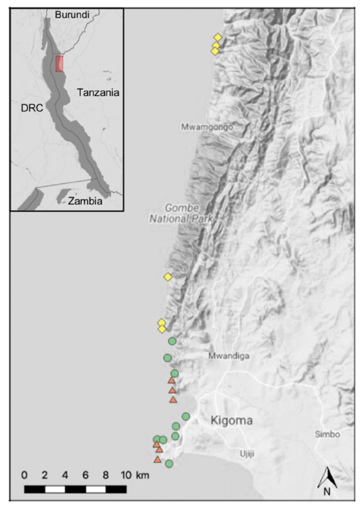
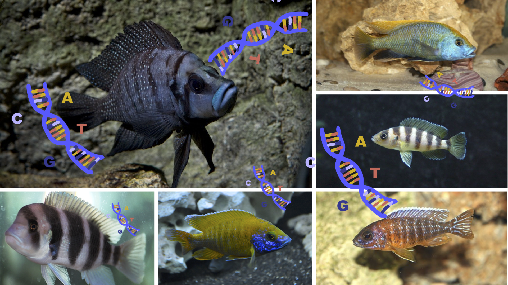

Chapter 12 Background
Advances in sequencing technology mean that it is now feasible to characterise eDNA and diet content through DNA-based approaches by simultaneously sequencing short standardised DNA sequences (DNA barcodes) from a variety of environmental samples, a process known as DNA metabarcoding.
The dataset we will look at today is from a study by Doble et al. 2019 on tropical fish communities from Lake Tanganyika.
The study's authors collected water eDNA samples from sites along the shore of Lake Tanganyika in Tanzania. Samples where then filtered, extracted and made into individual libraries using a two-step PCR method to attach indexes and Illumina adapters.

Four different primer sets were used to assess the community structure of fishes in Lake Tanganyika. We will examine the two shorter primer sets today:
- MiFish‐U (Miya et al. 2015) these primers target a hypervariable region of the 12S rRNA gene.
- 12S‐V5 (Riaz et al. 2011) these primers target a different part of the 12S region.
Both these primer sets target sections of the mitochondrial 12S rRNA gene. The 12S gene occupies 1/16th of the mitochondrial genome. It is the mitochondrial homologue of the prokaryotic 16S and eukaryotic nuclear 18S ribosomal RNAs.

Both genes were sequenced using a single Illumina MiSeq 300 cycle sequencing run (2x150bp paired end sequencing).
The subset of samples you will analyse today were sampled in triplicate from sites along the shore of Lake Tanganyika in 2017. Also included is a filter control, an extraction control and 5 aquarium samples. The aquarium samples contained five cichlid species endemic to the lake.